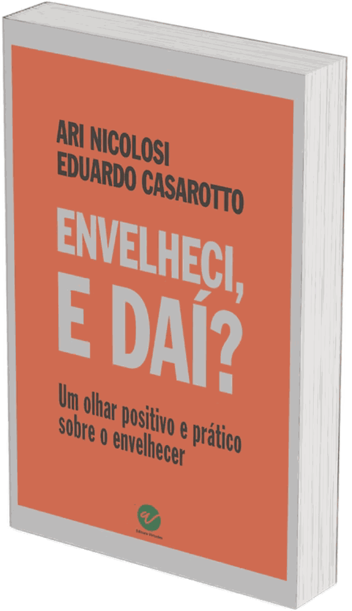

Livro · Ari Nicolosi e Eduardo Casarotto
Envelheci, e Daí?
Ninguém ensina a envelhecer. A gente aprende sozinho, tarde, e quase sempre do jeito difícil. Este livro é a conversa que deveria ter acontecido antes.
Sobre o livro
A sociedade convenceu quase todo mundo de que envelhecer é ruim. Este livro discorda, e não por otimismo: por observação.
Cada fase da vida é especial e fundamental. Em todas temos desafios, e cada uma tem seus altos e baixos. Isso é viver.
O livro nasceu de uma dupla incomum. Ari Nicolosi é velho, e diz isso sem rodeio - está no RG dele. Roteirista, ilustrador e diretor de animação, com formação em psicanálise, ele escreve a partir do que a própria vida ensinou.
Eduardo Casarotto ainda não é velho, mas quem o conhece diz que tem alma velha. Entra com o que a Virtologia descobriu sobre o funcionamento humano nessa fase.
O resultado não é livro de autoajuda nem tratado de gerontologia. É uma conversa sobre como se preparar para envelhecer, e o que fazer se você já chegou lá sem ter se preparado.
Uma pergunta que o livro faz logo no começo
Qual o dia mais importante da sua vida? Qual o melhor momento? Qual o instante melhor para ser vivido?
A resposta do livro é uma só: é hoje. E o capítulo inteiro existe para mostrar por que essa não é uma frase bonita, e sim a única postura que sustenta o envelhecer.
Tio Rogério e Clarice
Para não transformar o assunto em teoria, os autores criaram dois personagens, baseados em pessoas e situações reais. Eles atravessam o livro inteiro.
Tio Rogério, 89 anos
Foi taxista quando taxista precisava conhecer a cidade de cor. Tocou bateria numa banda, depois trabalhou em banco. Viúvo, sem filhos, mora sozinho.
Sai pouco. Não tem iniciativa para fazer amigos nem para arrumar companhia. Não tem mais propósito nenhum, e vive uma rotina que não empolga.
Ele se vangloria da idade e ao mesmo tempo luta contra ela, às vezes de um jeito meio ridículo.
Clarice
A contraparte dele. Vem de uma época em que ser desquitada custava caro, e carregou o preconceito que a sociedade reservava para isso.
É por ela que o livro entra nas questões de vínculo, de solidão e do que ainda é possível numa relação depois de certa idade.
Observe se não tem nada de tio Rogério em você.
É essa a proposta: os personagens não são exemplo do que fazer. São espelho.
Os pilares do bem envelhecer
A parte central do livro se organiza em três, e cada um tem seus capítulos:
-
1
Saúde física
O que dá para fazer, e a partir de onde. Caminhar já é alguma coisa, e o livro parte daí em vez de propor rotina que ninguém sustenta.
-
2
Saúde mental
A frustração, a mania de querer controlar os fatos, o hábito de se antecipar ao futuro. E a diferença entre pensar e ruminar, que quase ninguém faz.
-
3
Saúde social
As relações com os outros, e por que a distância que a pessoa cria acaba cobrando caro. É o pilar mais negligenciado dos três.
O que o livro discute
É hoje
Qual o dia mais importante da sua vida, e por que a resposta muda tudo o que vem depois.
Uma linha do tempo
Cada fase da vida com seus desafios próprios. Por que a velhice não é pior que as outras, só diferente.
Os pilares do bem envelhecer
Saúde física, mental e social. O que sustenta cada um e o que derruba.
Frustração
Querer controlar os fatos e se antecipar ao futuro. O caminho mais rápido para adoecer nessa fase.
Pensar é diferente
A distinção entre usar a cabeça e ficar remoendo. Uma capacidade humana que precisa ser treinada.
Relacionamento maduro
O que muda nas questões afetivas com a idade, e o que continua igual.
Tio Rogério e Clarice se encontram
O capítulo em que os dois personagens se cruzam, e o que isso revela sobre solidão e escolha.
Trabalhar é preciso, e viver também
O que acontece com quem para de trabalhar, e por que tanta gente adoece na aposentadoria.
Tudo o que nasce, morre
O capítulo sobre a morte, tratado sem rodeio e sem drama.
O que o universo está gritando
Sobre a ideia de que o mundo é injusto. A resposta dos autores acrescenta uma palavra à frase, e ela muda o sentido inteiro.
Público indicado
Para quem já chegou lá
Quem está na maturidade e quer viver essa fase sem a sensação de que o melhor já passou.
O livro não promete rejuvenescimento. Promete outra relação com o que está acontecendo.
Para quem vai chegar
Ou seja, todo mundo. O livro sustenta que envelhecer bem é algo para o qual a pessoa se prepara, e que preparar-se cedo muda o resultado.
E se você já chegou sem ter se preparado, ainda há tempo.
Também serve a quem cuida de alguém idoso e quer entender o que está acontecendo do outro lado. Boa parte do que parece teimosia tem explicação, e o livro dá a explicação.
Quem escreveu
Ari Nicolosi
Roteirista, ilustrador e diretor de animação, com formação em psicanálise. Estudou psicanálise para desenvolver melhor os personagens das próprias histórias, e acabou ficando pelos mistérios da mente humana.
Escreve a partir do que viveu. Segundo ele mesmo, aprendeu a respeitar, a se respeitar e a se poupar.
Eduardo Casarotto
Pesquisador, professor, psicanalista e criador da Virtologia. Formou mais de 2.000 terapeutas e supervisionou milhares de casos clínicos.
Entra no livro com o que a Virtologia descobriu sobre o funcionamento humano: as faixas de evolução, o cálculo familiar e o aparelho psíquico.
O que costumam perguntar
Preciso conhecer a Virtologia para ler?
Não. Este é o mais acessível dos livros do Instituto. É escrito para qualquer pessoa, sem vocabulário técnico e sem exigir leitura anterior.
É um livro só para idosos?
Não. Ele sustenta justamente o contrário: envelhecer bem se prepara antes, e quanto mais cedo a pessoa entende isso, melhor o resultado.
É livro de autoajuda?
Não no sentido de fórmulas e frases de efeito. É uma conversa sobre o que muda com a idade, com personagens que ilustram o que dá certo e o que não dá.
Substitui acompanhamento médico?
Não. Nos quadros com determinação biológica, a Virtologia soma-se ao tratamento médico e não fica no lugar dele. Se você está em sofrimento, procure ajuda profissional.